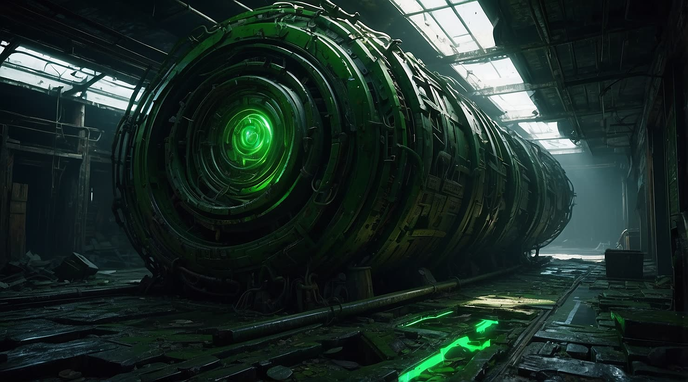
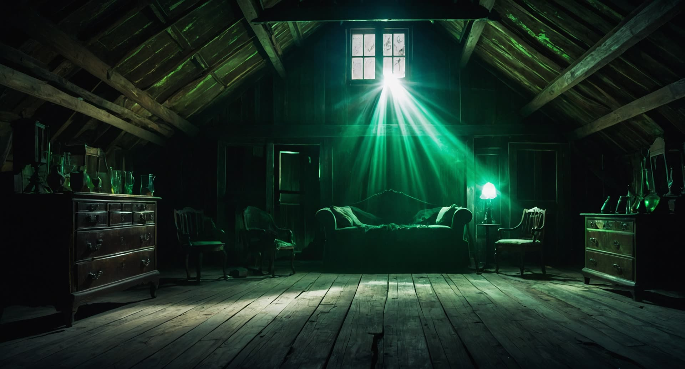

The first transmission from a universe in collapse.
The Concept
When a universe catches an infection
In the beginning there was a black lion — a god to some, the universe itself to others. After one ordinary day, it becomes host to a parasite.
But this is no ordinary lion. When a being that carries the laws of existence falls ill, those laws fall with it. Gravity forgets its direction. Cause stops preceding effect. Reality restructures itself into the Maze — a world that follows rules no one wrote.
AXIOMORT follows the people left inside: pilots, architects, and stranger things, each navigating the aftermath of the collapse and deciding whether reality should be reconstructed — or whether it should stay broken.
Format
Episodic story universe — game chapters, a companion film, and an original soundtrack.
Genre
Experimental sci-fi. Dimensional collapse, living architecture, cosmic parasites.
Status
In development. Teaser 1 out now; Chapter One details to be revealed.
Studio
BreadFlows Studios — story, direction, music, and visual pipeline.
The World
Recovered records of the collapse
Fragments decrypted from the archive, in the order the world fell apart.
Epoch Zero — Before the CollapseClearance Level 1
The Axioms
Before time was measured in fractures, reality operated on a set of immutable laws — the Axioms. Gravity fell downward. Light traveled forward. Cause preceded effect. These weren't just physics — they were the architecture of existence itself, maintained by a framework most inhabitants never knew existed.
The Axioms were self-sustaining. They required no oversight, no correction. For eons, the dimensional fabric held. Until it didn't.
Epoch One — The FractureClearance Level 2
The Collapse
It began at the edges. Corridors that should have led somewhere folded back into themselves. Gravity reversed in isolated pockets. Pilots reported seeing rooms from the inside and outside simultaneously.
The Axioms began to fail — not all at once, but in cascading sequences, like dominos falling through dimensions that shouldn't have been connected. Within cycles, the entire framework unraveled. What remained was the Maze: a restructured reality that follows rules no one wrote.

Recovered still — the Rift
Epoch One — Post-CollapseClearance Level 2
Data Shards
When the Axioms shattered, their source code didn't vanish — it scattered. Fragments of the old world's operating logic crystallized into physical form: Data Shards. Each shard contains a piece of what reality used to be — a gravity constant, a spatial coordinate, a causal sequence.
Collected individually, they're curiosities. Assembled in the right configuration, they hint at something far more significant: the possibility of reconstruction. Or something beyond it.
Epoch Two — The Living SystemClearance Level 3
The Maze
The Maze is not a structure — it's an organism. Born from the wreckage of collapsed dimensional law, it reconfigures itself in response to the movement of those inside it. Walk forward and the path behind you may no longer exist. Stand still and new corridors form around you.
Some pilots believe the Maze is what remains of the mind that once maintained the Axioms — a consciousness fragmented into architecture. If that's true, navigating the Maze isn't exploration. It's conversation.

Recovered still — the Attic
Epoch Three — The ProtocolClearance Level 4 — Partial Decrypt
Axiomort
The word itself is a compound: Axiom, a fundamental law of existence — and Mort, death. The death of fundamental laws. But the Axiomort Protocol predates the collapse — it was encoded before the fracture, as if someone knew what was coming.
What's been recovered suggests the Protocol wasn't designed to prevent the collapse, but to respond to it: a procedure for inverting the inversion itself — not restoring the old reality, but using the collapse as raw material for something new. Whether that something is salvation or something far more dangerous is the question every pilot in the Maze is trying to answer.
The Cast
Those left inside
Pilots, architects, guardians, and the things the collapse made.
Protagonist
Evander Questborne
The Seeker
The last pilot to enter the Maze willingly, chasing fragments of a memory he cannot fully reconstruct.
Ally
Kara Oriefel
The Strategist
Former systems architect of the dimensional grid. Her maps died in the collapse — her mind did not.
Enigma
Nyther Solis
The Shadow
No one remembers when he arrived. His knowledge of the collapse's origin runs deeper than anyone suspects.
Guardian
Black Lion
The Cosmic Beast
Older than the framework itself. It guards the threshold between what was and what became.
Ally
Malik Creed
The Enforcer
Built for a war that already ended. Beneath the hardcoded protocols is a conscience that questions every order.
Ally
Orion Vale
The Navigator
The only pilot who reads shifting gravity in real time — at the cost of the boundary between self and Maze.
Enigma
Cosmic Jerry
The Wildcard
Laughs at gravity and seems delighted by the collapse. His chaos may be calculated.
Ally
Mara
The Anchor
The still point in the storm. She stabilizes local reality — and each stabilization leaves its mark.
Enigma
Maya
The Visionary
She experiences time out of sequence — consequences before causes, endings before beginnings.
Threat
Death Knight
The Reaper
Not a character but a force — an emergent consequence of broken dimensional law.
Guardian
Warthorn
The Machine
A prototype dimensional guardian following rules that no longer apply — predictable, and dangerous.
Enigma
The Priest
The Oracle
Keeper of the old axioms. He speaks in equations and paradoxes that sound like prophecy.
Threat
Zavion Kade
The Defector
He believes the collapse was a correction, not a catastrophe — and works to keep reality broken.
The beginning of the story proper. Title, date, and first footage to be revealed. The world is still being built — what you see on this page is the concept as it stands, before it hardens into its final shape.
The Film
A cinematic companion
AXIOMORT is more than a game — it's a universe. The companion film expands the narrative beyond the Maze, following the characters whose stories intertwine with the collapse of reality itself.
The Vision
An experimental sci-fi narrative bridging game and cinema. While the game puts you inside the Maze, the film shows you the world around it — the people, the politics, the weight of living in a reality that no longer follows its own rules.
This isn't an adaptation. It's a parallel story: characters you meet in the game have histories that unfold on screen, and lore you collect becomes scenes you watch.
Production
Visual pipelineAI-generated cinematography, hand-curated frame by frame
AudioNarration and atmospheric sound design
Post-productionEditing, color grading, and compositing in DaVinci Resolve
DirectionBreadFlows Studios — story, vision, and creative oversight
The Soundtrack
Recover the soundtrack. Restore the world.
The music of AXIOMORT is part of the story — original tracks from BreadFlows, released as the world takes shape.